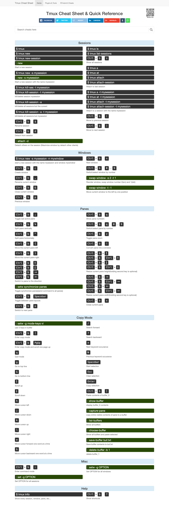

tmux
Ctrl-b then [ then you can use your normal navigation keys to scroll around (eg. Up Arrow or PgDn). Press q to quit scroll mode.
tmux ls
tmux attach -t 2
tmux kill-session -t 3
C-b ? 显示快捷键帮助
C-b C-o 调换窗口位置，类似与vim 里的C-w
C-b 空格键 采用下一个内置布局
C-b ! 把当前窗口变为新窗口
C-b “ 横向分隔窗口
C-b % 纵向分隔窗口
C-b q 显示分隔窗口的编号
C-b o 跳到下一个分隔窗口
C-b 上下键 上一个及下一个分隔窗口
C-b C-方向键 调整分隔窗口大小
C-b c 创建新窗口
C-b 0~9 选择几号窗口
C-b c 创建新窗口
C-b n 选择下一个窗口
C-b l 切换到最后使用的窗口
C-b p 选择前一个窗口
C-b w 以菜单方式显示及选择窗口
C-b t 显示时钟
C-b ; 切换到最后一个使用的面板
C-b x 关闭面板
C-b & 关闭窗口
C-b s 以菜单方式显示和选择会话
C-b d 退出tumx，并保存当前会话，这时，tmux仍在后台运行，可以通过tmux attach进入 到指定的会话
Ctrl+b // 激活控制台；此时以下按键生效
系统操作
? // 列出所有快捷键；按q返回
d // 脱离当前会话；这样可以暂时返回Shell界面，输入tmux attach能够重新进入之前的会话
D // 选择要脱离的会话；在同时开启了多个会话时使用
Ctrl+z // 挂起当前会话
r // 强制重绘未脱离的会话
s // 选择并切换会话；在同时开启了多个会话时使用
: // 进入命令行模式；此时可以输入支持的命令，例如kill-server可以关闭服务器
\[ // 进入复制模式；此时的操作与vi/emacs相同，按q/Esc退出
~ // 列出提示信息缓存；其中包含了之前tmux返回的各种提示信息
窗口操作
c // 创建新窗口
& // 关闭当前窗口
数字键 // 切换至指定窗口
p // 切换至上一窗口
n // 切换至下一窗口
l // 在前后两个窗口间互相切换
w // 通过窗口列表切换窗口
, // 重命名当前窗口；这样便于识别
. // 修改当前窗口编号；相当于窗口重新排序
f // 在所有窗口中查找指定文本
面板操作
” // 将当前面板平分为上下两块
% // 将当前面板平分为左右两块
x // 关闭当前面板
! // 将当前面板置于新窗口；即新建一个窗口，其中仅包含当前面板
Ctrl+方向键 // 以1个单元格为单位移动边缘以调整当前面板大小
Alt+方向键 // 以5个单元格为单位移动边缘以调整当前面板大小
Space // 在预置的面板布局中循环切换；依次包括even-horizontal、even-vertical、main-horizontal、main-vertical、tiled
q // 显示面板编号
o // 在当前窗口中选择下一面板
方向键 // 移动光标以选择面板
{ // 向前置换当前面板
} // 向后置换当前面板
Alt+o // 逆时针旋转当前窗口的面板
Ctrl+o // 顺时针旋转当前窗口的面板
